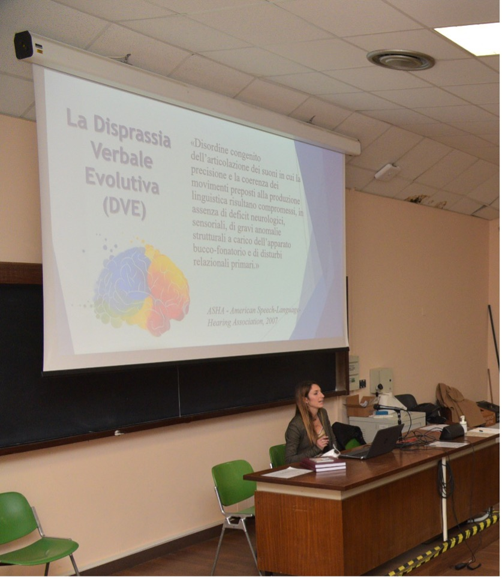

Errori fonologici “inconsistenti” per un medesimo target, presenti durante la produzione di consonanti e di vocali.
Disprassia Verbale Evolutiva
(DVE)
Disprassia Verbale Evolutiva (DVE)
Si tratta di un disordine congenito dell’articolazione dei suoni in cui la precisione e la coerenza dei movimenti preposti alla produzione linguistica risultano compromessi, in assenza di deficit neurologici, sensoriali o anomalie strutturali.

L'attuale Gold standard utilizzato dai clinici per porre diagnosi consiste nell’individuazione di tre sintomi cardine, identificati da parte dell’American Speech-Language-Hearing Association (ASHA, 2007):
Il bambino con DVE sperimenta particolare difficoltà nell’organizzare le configurazioni articolatorie iniziali e nella transizione dinamica dei movimenti articolatori da un segmento ad un altro, per produrre sequenze di suoni e parole.
Questo può manifestarsi nella segregazione sillabica, ovvero nello scandire in sillabe la parola target “ta-ta-u-ga” e nel groping articolatorio, ovvero la tendenza del bimbo a procedere “per tentativo ed errore”, mettendo in atto movimenti oro-articolatori a vuoto, nel tentativo di ricercare, con fatica, la corretta combinazione co-articolatoria necessaria alla produzione delle parole.
Nelle prime fasi dello sviluppo, tale aspetto può determinare l’uso preferenziale di un unico suono prolungato o di un ristretto insieme di vocalizzazioni ricorrenti.
Il carente controllo della durata temporale e della rapidità di movimento degli organi articolatori, può riflettersi nella persistenza di fenomeni fonologici tipici di età cronologicamente inferiori, come desonorizzazione delle consonanti sonore (per “pa” in luogo di “ba”).
La produzione verbale appare alterata soprattutto in termini di velocità, ritmo ed intonazione.